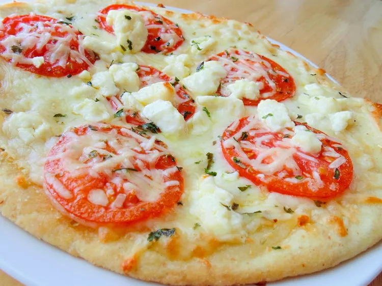

Four Cheese Margherita Pizza

Description
The Following description is from allrecipe:
This is a fantastic version of an Italian classic.
The feta cheese adds a rich flavor that brings this dish to life.
Incredibly easy and incredibly delicious!
Ingredients
Per 1 serving
- 1/4 cup olive oil
- 1 tbsp minced garlic
- 1/2 tsp sea salt
- 8 roma tomatoes, sliced
- 2 (12 inch) pre-baked pizza crusts
- 8 oz shredded mozarella cheese
- 4 oz shredded fontina cheese
- 10 fresh basil leaves, washed and dried
- 1/2 cup freshly grated parmesean cheese
- 1/2 cup crumbled feta cheese
Steps
- Stir in together olive oil, garlic, and salt; toss w/ tomatoes, and allow
to stand for 15 minutes. Preheat oven to 400 degrees F (200 degrees C).
- Brush each pizza crust with some of the tomato marinade.
Sprinkle the pizzas evenly with Mozzarella and Fontina cheeses.
Arrange tomatoes overtop, then sprinkle with shredded basil,
Parmesan, and feta cheese.
- Bake in preheated oven until the cheese is bubbly and golden brown,
about 10 minutes.
Home